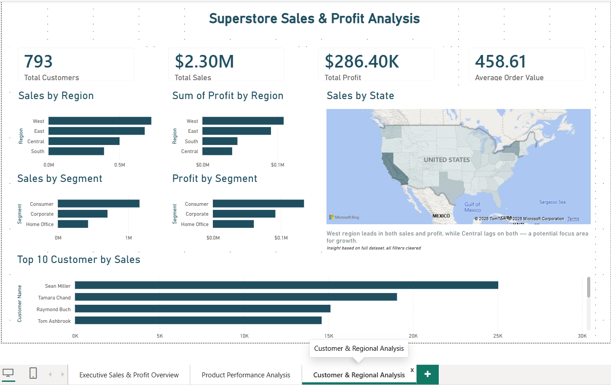

Where are sales strong but margins weak?
Furniture. It generates strong sales, but its profit margin is only 2.5%, against 12.5% for the business overall.
A three-page Power BI report built on the public Superstore sample data to show where sales are not turning into profit, by product, category and region.
The report opens with four headline numbers, so a reader sees the overall picture before looking at any breakdown.
Each question below is one the report was built to answer, with what it found.
Furniture. It generates strong sales, but its profit margin is only 2.5%, against 12.5% for the business overall.
The Zebra GK420t printer is one of the largest loss drivers in the dataset.
The West leads in both sales and profit.
Sean Miller and Tamara Chand contribute significantly to revenue.
KPI cards, sales and profit trends, category analysis, and customer segment performance.

High-level KPIs, sales trends and profit trends.
Top products by sales and profit, loss-making products, and sales versus profit.

Product profitability, top performers and loss drivers.
Regional sales and profit, top customers, and geographic performance.

Customer contribution and regional performance.
I'm happy to walk through how the model and measures work.